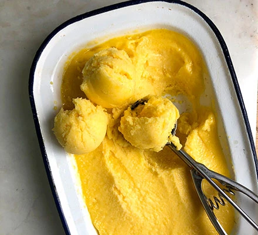

Healthy, Delicious and Protein-Packed Mango Icecream

Description
A smooth and sweet protein-packed treat for you and your gymbros to eat
Ingredients
- 1.5 cups of frozen mango
- 1 scoop vanilla protein powder
- A splash of your choice of milk or coconut cream
- Natural sweetener of choice
Preperation Method
Add all ingredients into a high-powered blender or food processor and blend till desired consisteny
Enjoy right away or freeze for 30 to 60 minutes for a more traditional icream consistency